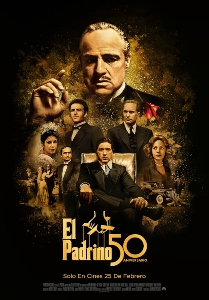
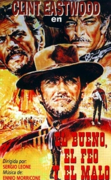

Si te preguntásemos cuál es la mejor película de la historia del cine, ¿qué dirías? ¿'El padrino'? ¿'Casablanca'? ¿'El rey león'? ¿'Pulp Fiction'? ¿'El viaje de Chihiro'? ¿'Cantando bajo la lluvia'? Desde luego, no faltan películas de entre las que escoger. Tras más de un siglo de vida del séptimo arte, esta pregunta es casi imposible. Hay muchos factores a tener en cuenta, muchos directores y directoras a considerar, películas que marcaron un antes y un después, títulos queridos que nunca mueren... ¡Es una decisión casi imposible! Así que se la vamos a dejar a quienes más importan: al público. Esta es la lista de las películas mejor valoradas por los usuarios en el portal IMDb (con fecha 07/03/2022; las votaciones van cambiando), una de las plataformas más fiables y completas del cine, y donde se cumulan miles y miles de votaciones que dan como resultado un ranking bastante ajustado del sentir popular.
1

The Shawshank Redemption (1994)
2
The Godfather (1972)
3

The Godfather Part 2 (1974)
4
Batman The Dark Knight (2008)
5
12 hombres sin piedad (1957)
6

La lista de Schindler (1993)
7

El señor de los anillos: El retorno del rey (2003)
8
Pulp Fiction (1994)
9
El bueno, el feo y el malo (1966)
10
El señor de los anillos: La comunidad del anillo (2001))
11
Fight Club (1999)
12
Forrest Gump (1994)
13
Inception (2010)
14

El señor de los anillos: Las dos torres (2002)
15
El imperio contraataca (1980)
16
Matrix (1999)
17
Goodfellas (1990)
18

Alguien voló sobre el nido del cuco (1975)